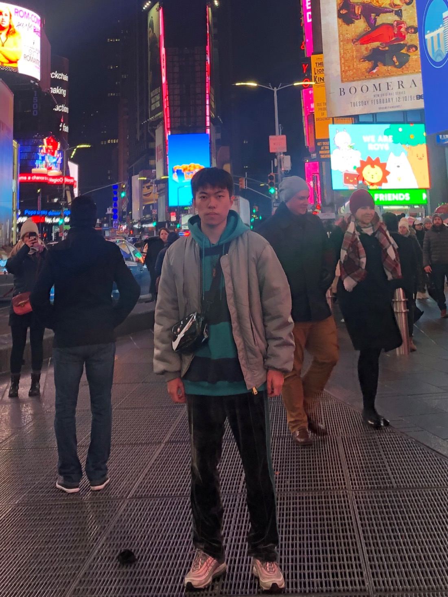
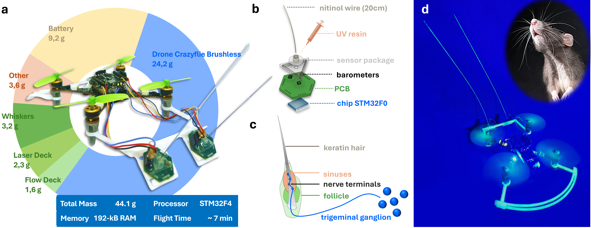
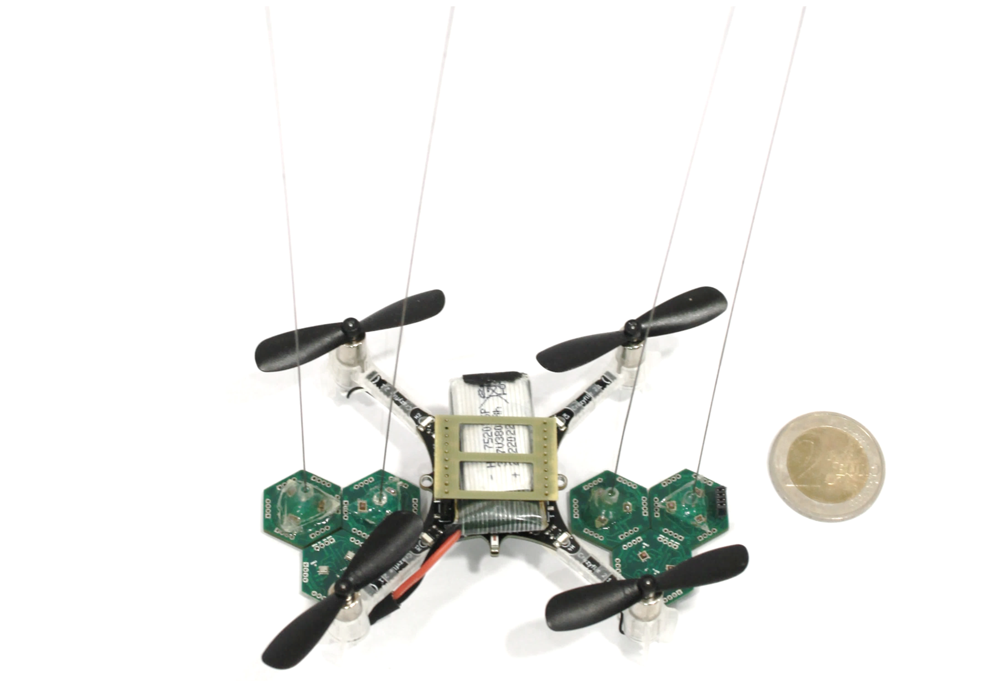
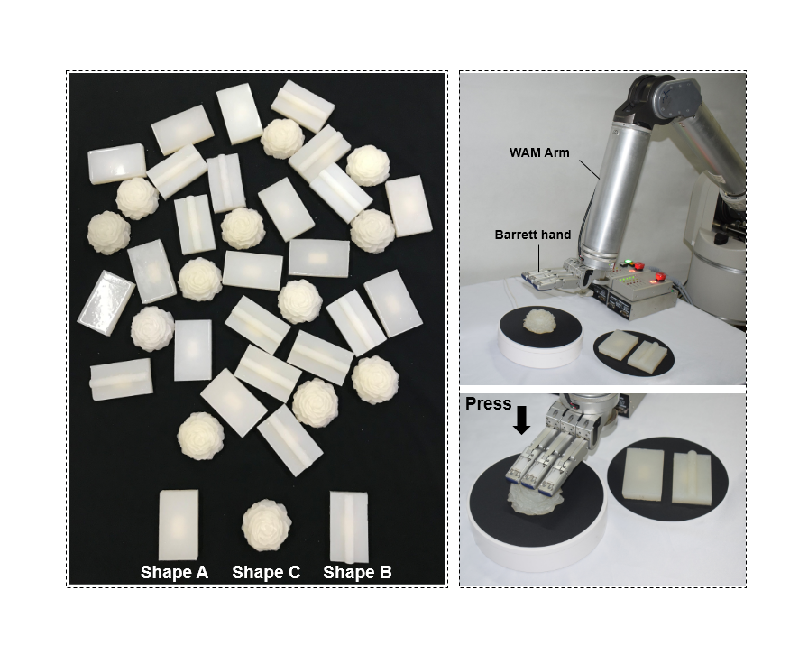
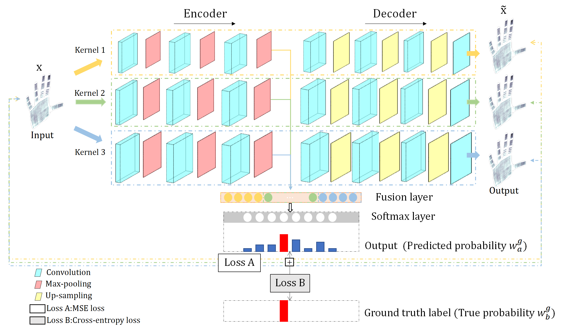

Ph.D. candidate at TU Delft, supervised by Prof. Guido de Croon and Dr. Salua Hamaza.
Micro Air Vehicle Lab · BioMorphic Intelligence Lab · Delft University of Technology
I received my joint M.Eng. degree from Southern University of Science and Technology (SUSTech) and Shenzhen Institute of Advanced Technology (SIAT), Chinese Academy of Sciences (CAS), supervised by Prof. Zhengkun Yi. I received my B.Eng. degree from Dalian University of Technology (DUT).
My research focuses on tactile aerial intelligence: enabling small aerial robots to perceive, navigate, and interact with the physical world through touch. I develop lightweight tactile sensors, learning-based perception methods, and closed-loop control strategies for contact-rich robotic systems.
I am particularly interested in tactile perception, aerial physical interaction, embodied AI, multimodal sensing, and compact robot learning systems that can operate on resource-constrained platforms.
For a complete and up-to-date list, please see my Google Scholar.

We present a tactile flight framework that enables tiny drones to physically sense, navigate, and actively explore their surroundings using lightweight artificial whiskers. The system integrates a biomimetic whisker sensor, learning-based contact-depth estimation with Kalman filtering, and an onboard finite-state control architecture, allowing a micro aerial vehicle to detect obstacles, maintain tactile interaction, follow surface contours, and build local understanding of confined environments without relying on vision. Real-world flight experiments demonstrate tactile navigation, contour following, and autonomous exploration on a resource-constrained aerial platform.

We propose a lightweight whisker-inspired tactile sensing system for aerial robots, enabling 3D contact localization through compliant sensing and temporal learning.

A tactile hardness recognition method using supervised autoencoder representations and distance-aware ordinal supervision.

We introduce a supervised autoencoder framework for tactile gesture recognition, improving representation learning and generalization on limited tactile data.
Tactile sensing · Aerial robotics · Embodied AI · Multimodal perception · Contact-rich control · Embedded robotic systems